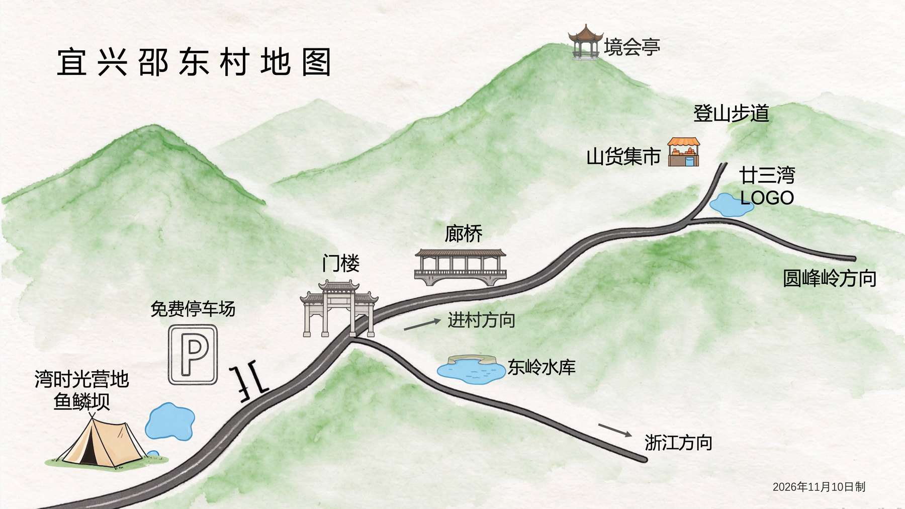

村庄概览
Overview邵东行政村位于江苏省宜兴市湖㳇镇，阳羡生态旅游度假区东部，地处苏浙两省交界。东岭、邵坞两村合并而成。 这里有“江苏唯一茶叶进贡交通遗址”的贡茶古道，也有古琴大师成公亮笔下《走进邵坞》的山水之音，坐拥阳羡茶千年文脉，也承载着当代乡村振兴的期待。

关键数据
Key Numbers村庄详情
In Detail地理位置与交通
邵东村隶属宜兴市湖㳇镇，位于阳羡生态旅游度假区东部，苏浙两省交界，与浙江省长兴县的煤山镇和水口乡同时相邻，距宜兴市区30分钟车程、无锡市区1.5小时车程。
村落所在的悬脚岭和啄木岭自古是常州府、湖州府山货进出的要道，也是连通唐、宋时期茶马古道的重要节点。
历史沿革
2001 年，原东岭村与邵坞村，两村中各取一字，名为邵东。
两村各有鲜明印记：东岭早在明朝正德年间，应在天、应乐天兄弟自浙江平阳岩山迁来此地开枝散叶，至今已有五百余年历史（参考《孟坚公下后裔兴旺发达》谱系梳理文档）。邵坞因古琴大师成公亮散文《走进邵坞》而闻名。
人口与村落
全村户籍人口约 1905 人、732 户，划分为 17 个村民小组。实际常住人口仅约 600 人，60 岁以上占比达 42%，老龄化与空心化明显。
年轻人外流、运营人才短缺，是村庄产业发展的根本制约。但也因此独具清幽，是众多艺术创作者的旅居目的地。
自然生态
村域面积 10.9 平方公里，拥有1.7 万亩竹林与超过 82% 的森林覆盖率，是名副其实的「竹海山村」。单位空气负氧离子浓度常年保持在10000个以上。
溪涧纵横、水库点缀。东岭水库既可蓄水灌溉，曾是小型水电站；新开发的湾时光营地鱼鳞坝是远近闻名的戏水圣地。
产业与物产
竹：竹笋、竹制品与竹海观光 茶：阳羡茶承千年贡茶文脉，廿三湾一带为古贡茶产区。 水：山泉水为经检测的天然软水，村民世代饮用水源。
“来山中体验自然清幽”和“把山里好货带回家”正成为村庄振兴与城市发展的双重链接。
文化与文脉
贡茶古道｜江苏唯一反映古代茶叶进贡史实的交通遗址。 茶经留墨｜陆羽在《茶经》中记载此地茶产；白居易、岳珂等文人墨客亦在此留下诗章。 琴学记忆｜古琴大师成公亮曾寓居邵坞，写下万字散文《走进邵坞》。 民间传说｜项羽与廿三湾、阳羡贡茶源、义士饭篮臂等传说，构成这里独有的民间记忆。